Kapital 9 Clustering
9.1 Indledning og læringsmål
9.1.1 Læringsmål
Du skal være i stand til at:
- forklare den grundlæggende idé bag k-means-klyngeanalyse (k-means clustering)
- bruge funktionen
kmeans()og præsentere resultaterne i et tidy format medbroom::augment() - anvende
purrr::map()til at afprøve flere k-værdier og argumentere for det antal, der passer bedst til datasættet - udføre en enkel hierarkisk klyngeanalyse med
hclust()og fortolke dendrogrammet
- Se alle tre videoer om k-means samt notatet om hierarkisk clustering
- Læs kapitelteksten (denne fil)
- Gennemfør quizzen “Clustering”
- Lav problemstillingerne
9.1.2 Indledning til kapitel
Clustering har til formål at dele observationer op i klynger (clusters), så observationer inden for samme klynge ligner hinanden mest muligt, mens observationer i forskellige klynger adskiller sig mest muligt. Det hjælper os med at afklare spørgsmål som:
- Hvor mange forskellige klynger findes der i datasættet?
- Hvilke observationer tilhører de enkelte klynger?
- Afslører mønstre feks. subtyper, segmenter eller udliggere
I kapitlet demonstrerer vi to populære metoder, k-means og hierarkisk clustering, begge implementeret i en tidyverse-workflow.
9.1.3 Video ressourcer
- Video 1: K-means clustering
- Video 2: augment, glanced og tidy med K-means. OBS der er en lille fejl i koden omkring 6:00 - den anden
geom_pointskal væregeom_point(data = kclust_tidy,aes(x=bill_length,y=bill_depth),shape="x,colour="black")fordi tallerne er allerede basaserede på “scaled” data ikclust_tidy- se sektion 9.2.5 for uddybelse.
- Video 3: Hvor mange clusters skal man vælge?
- “Video” 4: Hierarchical clustering
Se venligst kursusnotaterne
9.2 Method 1: K-means clustering
I k-means clustering bliver samtlige observationer tilknyttet den nærmeste cluster “centroid” (se “hvordan fungerer kmeans?” nedenunder). I k-means skal man specificere antallet af clusters, som observationerne skal opdeles i, på forhånd. Derfor kræver det en vis undersøgelsesindsats at vælge det bedste antal clusters, der passer til problemstillingen, eller som bedst repræsenterer datasættet.
Lad os tage udgangspunkt i datasættet penguins. Vi begynder med at fjerne observationerne med NA i mindst én variabel ved at bruge funktionen drop_na, og ved at specificere at year skal være en faktor (for at skelne den fra de andre numeriske kolonner):
Vi ved allerede i forvejen, at der er 3 species i disse data, som vi plotter her med forskellige farver.
penguins %>% ggplot(aes(x=bill_length_mm,y=body_mass_g,colour=species)) +
geom_point() +
theme_classic()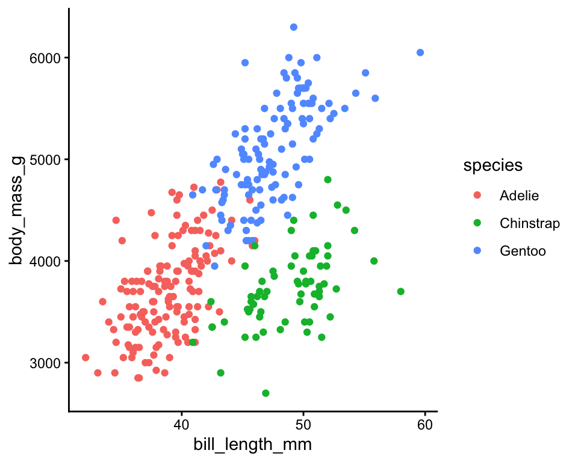
Vi vil gerne bruge k-means clustering på de numeriske variabler i datasættet og beregne 3 clusters ud fra disse. Derefter kan det være interessant at sammenligne de clusters, vi får, med de tre arter af pingviner - hvor gode er disse clusters til at skelne mellem de forskellige arter, eller indfanger de en anden struktur i datasættet (for eksempel køn eller den ø, de bor på)?
9.2.1 Hvordan fungerer kmeans?
K-means er en iterativ proces. Lad os forestille os, at vi gerne vil have tre clusters i vores data. Man starter med tre tilfældige observationer og kalder dem for clusterens middelværdier eller “centroids”. Man tilknytter alle observationer til én af de tre clusters (den nærmeste af de tre centroids), og beregner herefter en ny middelværdi/centroid for hver cluster. Man tilknytter samtlige observationer igen efter den nærmeste af de tre nye cluster centroids, og så gentager man processen flere gange. Efter flere gange konvergerer de tre centroids mod nogle faste værdier, der ikke længere ændrer sig meget, hver gang man gentager processen. Disse tre centroids definerer de tre endelige clusters, og samtlige observationer er tilknyttet én af disse.
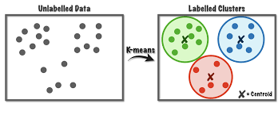
Figure 9.1: source: https://towardsdatascience.com/k-means-a-complete-introduction-1702af9cd8c
Jeg beder ikke om detaljerne i metoden, men der er mange videoer på YouTube, der bedre forklarer, hvordan k-means fungerer, for eksempel: https://www.youtube.com/watch?v=4b5d3muPQmA
Bemærk, at der er noget tilfældighed indbygget i algoritmen. Det betyder, at hver gang man anvender k-means, får man et lidt anderledes resultat.
9.2.2 Within/between sum of squares
Man kan forestille sig, at hvis man laver en god clustering af et datasæt, så ligner observationerne inden for den samme cluster hinanden meget, mens observationerne i forskellige clusters er meget forskellige fra hinanden. Med andre ord, skal afstanden mellem observationerne i samme cluster være så lille som muligt, og afstanden mellem observationerne i forskellige clusters skal være så stor som muligt. For at måle dette kan man beregne følgende:
- total within sum of squares - den totale kvadrerede afstand fra observationerne til deres nærmeste centroid.
- total between sum of squares - den totale afstand fra centroids til alle andre centroids. Denne skal være så stor som muligt.
9.2.3 Kør k-means i R
K-means fungerer kun på numeriske data, som vi kan vælge fra datasættet med select() i kombination med hjælpefunktionen where(is.numeric). Vi bruger også scale(), hvilket betyder, at alle variabler får den samme skala, og det forhindrer, at nogle får mere indflydelse end andre i det endelige resultat.
Man er også nødt til at specificere på forhånd, hvor mange clusters man ønsker at opdele datasættet i, så lad os sige centers=3 inden for funktionen kmeans() her og beregne vores clusters:
## K-means clustering with 3 clusters of sizes 119, 85, 129
##
## Cluster means:
## bill_length_mm bill_depth_mm flipper_length_mm body_mass_g
## 1 0.6537742 -1.1010497 1.1607163 1.0995561
## 2 0.6710153 0.8040534 -0.2889118 -0.3835267
## 3 -1.0452359 0.4858944 -0.8803701 -0.7616078
##
## Clustering vector:
## [1] 3 3 3 3 3 3 3 3 3 3 3 3 2 3 2 3 3 3 3 3 3 3 3 3 3 3 3 3 3 3 3 3 3 3 3 3 3
## [38] 3 2 3 3 3 3 2 3 3 3 2 3 3 3 3 3 3 3 2 3 3 3 3 3 3 3 2 3 3 3 2 3 2 3 3 3 2
## [75] 3 2 3 3 3 3 3 3 3 3 3 2 3 3 3 2 3 3 3 2 3 2 3 3 3 3 3 3 3 2 3 2 3 2 3 2 3
## [112] 3 3 3 3 3 3 3 3 3 3 3 3 2 3 2 3 3 3 3 3 3 3 3 3 3 3 3 3 3 3 3 3 3 3 2 1 1
## [149] 1 1 1 1 1 1 1 1 1 1 1 1 1 1 1 1 1 1 1 1 1 1 1 1 1 1 1 1 1 1 1 1 1 1 1 1 1
## [186] 1 1 1 1 1 1 1 1 1 1 1 1 1 1 1 1 1 1 1 1 1 1 1 1 1 1 1 1 1 1 1 1 1 1 1 1 1
## [223] 1 1 1 1 1 1 1 1 1 1 1 1 1 1 1 1 1 1 1 1 1 1 1 1 1 1 1 1 1 1 1 1 1 1 1 1 1
## [260] 1 1 1 1 1 1 2 2 2 2 2 2 2 2 2 2 2 2 2 2 2 2 2 2 2 2 3 2 3 2 2 2 2 2 2 2 3
## [297] 2 3 2 2 2 2 2 2 2 2 2 2 2 2 2 2 2 2 2 2 2 2 2 3 2 2 2 2 2 2 2 2 2 2 2 2 2
##
## Within cluster sum of squares by cluster:
## [1] 139.4684 109.4813 120.7030
## (between_SS / total_SS = 72.2 %)
##
## Available components:
##
## [1] "cluster" "centers" "totss" "withinss" "tot.withinss"
## [6] "betweenss" "size" "iter" "ifault"Man får forskellige ting frem, for eksempel:
Cluster means- det svarer til de centroids markeret med x i figuren ovenfor - bemærk, at de er 4-dimensionelle, da vi har brugt 4 variabler til at beregne resultatet.Clusteringvector - hvilken cluster hver observation er blevet tilknyttet.Within cluster sum of squares- Jo mindre, jo bedre - hvor meget observationerne inden for samme cluster ligner hinanden (den totale kvadrerede afstand fra observationerne til deres nærmeste centroid).
9.2.4 Ryd op i k-means resultaterne med pakken broom
Fra pakken broom har vi indtil videre mest beskæftiget os med glance(). Med glance() får man én-linje baserede summary statistikker fra én eller flere modeller samlet i én dataramme, for at lette et plot/labels osv. Der er også to andre funktioner vi tager i brug her. Her er en beskrivelse af de tre.
| Broom verb | Beskrivelse |
|---|---|
glance() |
én-linje summary (giver bl.a. tot.withinss, vi kan bruge til elbow plot) |
augment() |
Tilføj datasæt til clusters - feks. lav plots farvet efter cluster |
tidy() |
Multi-linje summary - (centroid koordinater) |
For at lave et plot af clusters kan det især være nyttigt at benytte augment. Her kan man se, at vi har fået en kolonne, der hedder .cluster med i den oprindelige dataramme (jeg flyttede kolonnen til første plads i nedenstående kode, så man kan se den i outputtet af kursusnoterne).
kc1 <- augment(kclust, penguins) #clustering = første plads, data = anden plads
kc1 %>% select(.cluster,all_of(names(penguins)))## # A tibble: 333 × 9
## .cluster species island bill_length_mm bill_depth_mm flipper_length_mm
## <fct> <fct> <fct> <dbl> <dbl> <int>
## 1 3 Adelie Torgersen 39.1 18.7 181
## 2 3 Adelie Torgersen 39.5 17.4 186
## 3 3 Adelie Torgersen 40.3 18 195
## 4 3 Adelie Torgersen 36.7 19.3 193
## 5 3 Adelie Torgersen 39.3 20.6 190
## 6 3 Adelie Torgersen 38.9 17.8 181
## 7 3 Adelie Torgersen 39.2 19.6 195
## 8 3 Adelie Torgersen 41.1 17.6 182
## 9 3 Adelie Torgersen 38.6 21.2 191
## 10 3 Adelie Torgersen 34.6 21.1 198
## # ℹ 323 more rows
## # ℹ 3 more variables: body_mass_g <int>, sex <fct>, year <fct>Nu benytter vi kc1 til at lave et plot. Her giver jeg en farve efter .cluster og form efter species, så vi kan sammenligne vores beregnede clusters med de tre forskellige arter. Bemærk her, at jeg kun har to variabler i plottet, men der er faktisk fire variabler, som blev brugt til at lave clusters med funktionen kmeans. En anden måde er at plotte de første to principal components i stedet for to af de fire variabler - det beskæftiger vi os med næste gang.
ggplot(kc1, aes(x = scale(bill_length_mm),
y = scale(bill_depth_mm))) +
geom_point(aes(color = .cluster, shape = species)) + theme_minimal()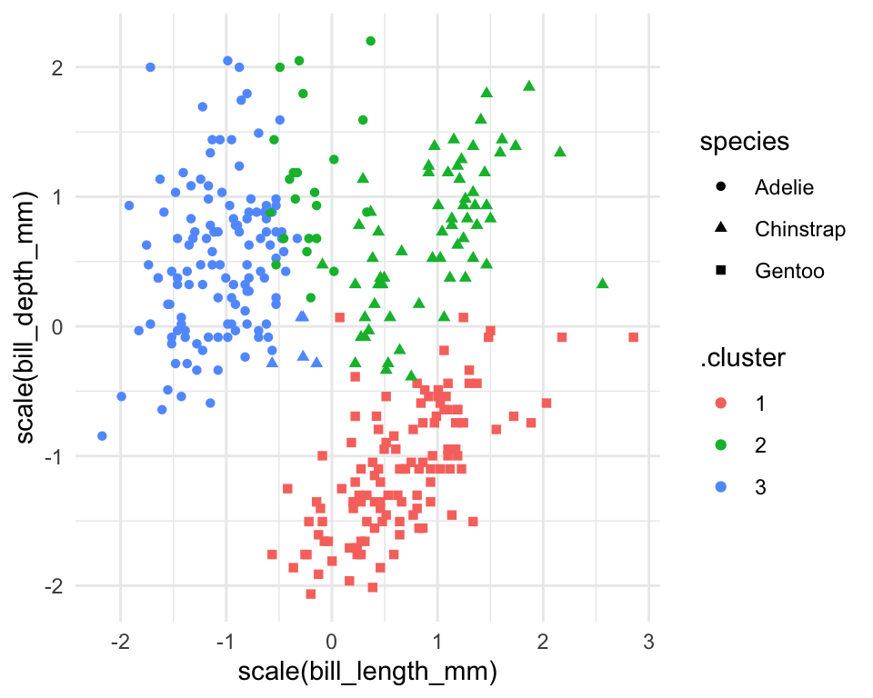
Vi kan også f.eks. optælle, hvor mange af de tre arter vi får i hver af vores tre clusters, hvor vi kan se, at Adelie og Chinstrap er blevet mere blandet mellem to af de tre clusters end Gentoo.
## # A tibble: 5 × 3
## .cluster species n
## <fct> <fct> <int>
## 1 1 Gentoo 119
## 2 2 Adelie 22
## 3 2 Chinstrap 63
## 4 3 Adelie 124
## 5 3 Chinstrap 59.2.5 Plot cluster centroids
Næste skridt er at se på resultatet af funktionen tidy() fra broom-pakken. Her har vi fået en overskuelig dataramme med middelværdierne (centroids) for de tre clusters over de fire variabler, som blev brugt i beregningerne.
## # A tibble: 3 × 7
## bill_length_mm bill_depth_mm flipper_length_mm body_mass_g size withinss
## <dbl> <dbl> <dbl> <dbl> <int> <dbl>
## 1 0.654 -1.10 1.16 1.10 119 139.
## 2 0.671 0.804 -0.289 -0.384 85 109.
## 3 -1.05 0.486 -0.880 -0.762 129 121.
## # ℹ 1 more variable: cluster <fct>Herefter benytter jeg kclust_tidy som et ekstra datasæt i ovenstående plot, men indenfor en anden geom_point() for at tilføje en x-form i midten af de tre clusters - se de følgende tre punkter, der forklarer nogle detaljer i koden:
- Jeg bruger funktionen
scale()påbill_length_mmogbill_depth_mm, fordi mine centroids, som også skal med i plottet, blev beregnet på skalerede data. - Jeg behøver ikke at anvende
scale()på mine centroids lagret ikclust_tidy, så jeg angiver bare akser-variablerne iaes()uden at anvendescale(). - Jeg har brugt
colorogshapesom lokale aesthetics i den førstegeom_point()her, da de ikke eksisterer som kolonner ikclust_tidy.
ggplot(kc1, aes(x = scale(bill_length_mm), # skal skalere de oprindelige data
y = scale(bill_depth_mm))) +
geom_point(aes(color = .cluster, shape = species)) +
geom_point(data = kclust_tidy,
aes(x = bill_length_mm, # behøver ikke at skalere igen
y = bill_depth_mm),
size = 10, shape = "x", show.legend = FALSE) +
theme_bw()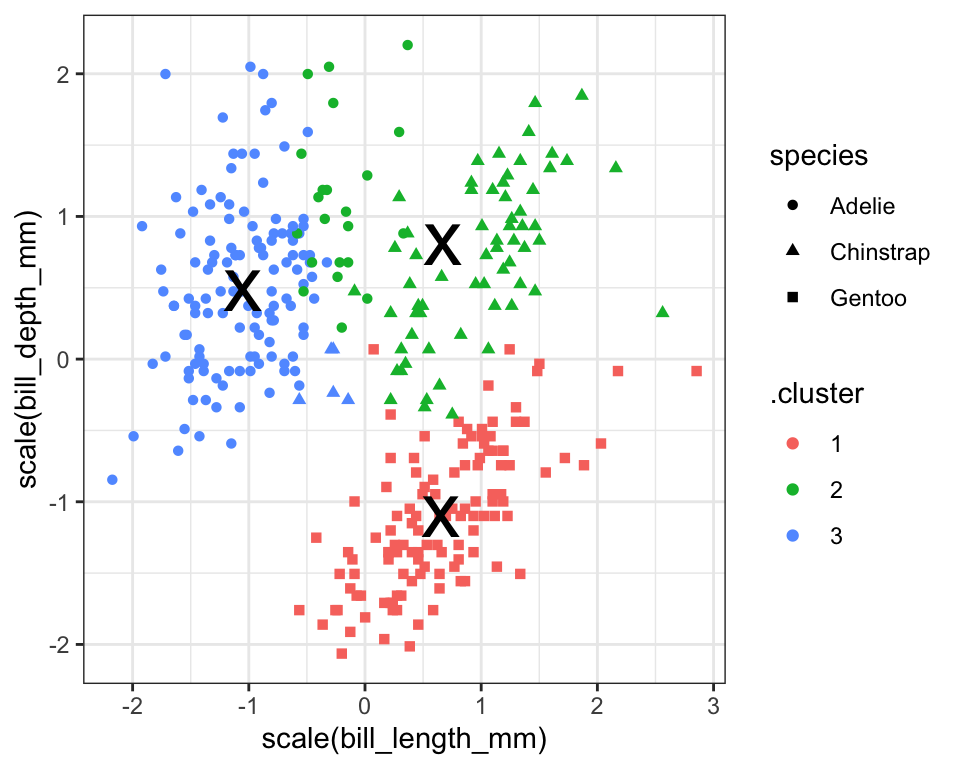
Vi kan se, at vores clusters ikke præcist fanger de samme tre grupper, som variablen species - der er forskelle. Det kan være, at vi også har fanget nogle oplysninger om fx den ø, pingvinerne bor på, eller deres køn.
9.3 Kmeans: hvor mange clusters?
Vi gættede på 3 clusters i den ovenstående analyse (da vi havde oplysninger om arter i forvejen), men det kunne godt være, at et andet antal clusters passer bedre til datasættet. Vi kan beregne flere clusterings og angive forskellige antal clusters, og dernæst bruge resultaterne fra disse til at træffe en beslutning om, hvor mange clusters vi vil angive i vores endelige clustering.
Det er vigtigt at kunne finde frem til et passende antal clusters:
- For mange clusters kan resultere i overfitting, hvor vi har for mange til at fortolke eller give mening.
- For få kan betyde, at vi overser indsigter i strukturen eller vigtige tendenser i datasættet.
9.3.1 Få Broom output for forskellige antal clusters
I det følgende laver jeg en brugerdefineret funktion, der laver en clustering på datasættet penguins_scaled, og hvor jeg angiver, at antallet af beregnede clusters skal være .x, der er et heltal (fx 1,3,99 osv.). Bemærk derfor, at selve data er den samme hver gang jeg anvender funktionen - det er bare antallet af clusters jeg beregner, der kan variere.
Dernæst laver jeg en tibble med variablen k, som indeholder heltal fra 1 op til 9. Når jeg anvender funktionen map på kolonnen k med ovenstående funktion my_func, svarer det til, at jeg anvender kmeans ni gange, med antal clusters fra 1 til 9. Jeg gemmer clustering resultaterne i en kolonne kaldet kclust, og så anvender jeg tidy, glance og augment til at få de forskellige outputter fra mine clusterings.
kclusts <-
tibble(k = 1:9) %>%
mutate( kclust = map(k, my_func),
tidied = map(kclust, tidy),
glanced = map(kclust, glance),
augmented = map(kclust, ~.x %>% augment(penguins))
)Husk, at for at få frem resultaterne i de forskellige formater fra tidy,glance og augment, er vi nødt til at anvende funktionen unnest() - her gemmer jeg resultaterne i tre nye dataframes, som vi kan referere til efterfølgende:
9.3.2 Elbow plot (glance)
Vi bruger tot.withinss fra outputtet fra glance() (dataframen kclusts_glance). Det giver målinger for den totale afstand af observationerne fra deres nærmeste centroid (within sum of squares).
## # A tibble: 9 × 8
## k kclust tidied totss tot.withinss betweenss iter augmented
## <int> <list> <list> <dbl> <dbl> <dbl> <int> <list>
## 1 1 <kmeans> <tibble [1 × 7]> 1328. 1328. 6.14e-12 1 <tibble>
## 2 2 <kmeans> <tibble [2 × 7]> 1328. 551. 7.77e+ 2 1 <tibble>
## 3 3 <kmeans> <tibble [3 × 7]> 1328. 474. 8.54e+ 2 2 <tibble>
## 4 4 <kmeans> <tibble [4 × 7]> 1328. 293. 1.03e+ 3 2 <tibble>
## 5 5 <kmeans> <tibble [5 × 7]> 1328. 228. 1.10e+ 3 3 <tibble>
## 6 6 <kmeans> <tibble [6 × 7]> 1328. 260. 1.07e+ 3 4 <tibble>
## 7 7 <kmeans> <tibble [7 × 7]> 1328. 183. 1.14e+ 3 4 <tibble>
## 8 8 <kmeans> <tibble [8 × 7]> 1328. 201. 1.13e+ 3 3 <tibble>
## 9 9 <kmeans> <tibble [9 × 7]> 1328. 187. 1.14e+ 3 3 <tibble>Jo flere clusters, jo mindre er statistikken tot.withinss typisk, men vi kan se i det følgende plot, at efter 2 eller 3 clusters, er der ikke meget gevinst ved at bruge flere clusters. Derfor vælger man ofte enten 2 eller 3. Dette plot kaldes ofte for en ‘elbow’ plot - man vælger det antal, der ligger på ‘elbuen’, hvor der ikke er meget gevinst ved at inkludere flere clusters i datasættet (men det er selvfølgelig meget subjektivt, hvilket tal man vælger til sidst).
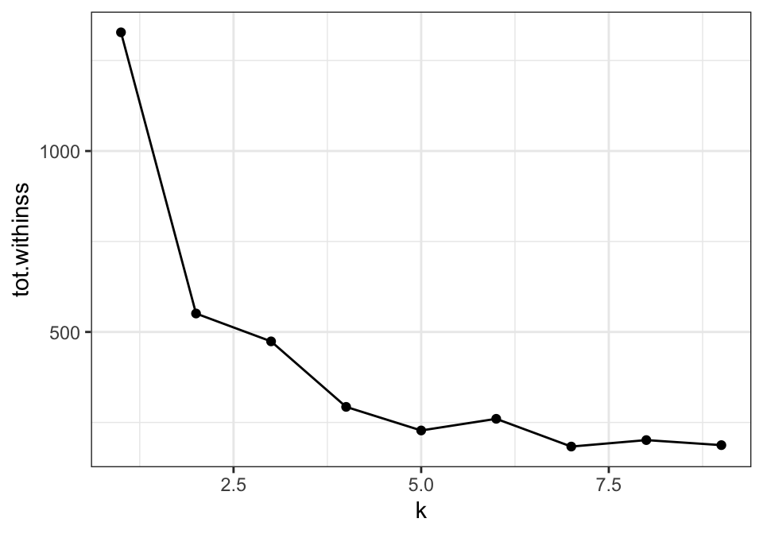
9.3.3 Automatisk beslutning med pakken NbClust
Man kan også overveje at prøve noget mere automatisk. For eksempel, pakken NbClust laver 30 forskellige clustering-algoritmer på datasættet for antal clusters fra 2 op til 9, og for hver af disse tages en beslutning om det bedste antal clusters. Man kan således se, hvilket antal clusters der blev valgt flest gange af de forskellige algoritmer.
library(NbClust)
set.seed(24) #fordi outputtet fra NbClust har indbygget tilfældighed
cluster_30_indexes <- NbClust(data = penguins_scaled,
distance = "euclidean",
min.nc = 2,
max.nc = 9,
method = "complete")Som det ses nedenfor, er enten 2 eller 3 clusters optimalt, hvilket stemmer overens med ‘elbow’ plot-metoden.
as_tibble(cluster_30_indexes$Best.nc[1,]) %>%
ggplot(aes(x=factor(value))) +
geom_bar(stat="count",fill="blue") +
xlab("Antal clusters") + ylab("Antal clustering-algoritmer der vælger dette antal") +
coord_flip() +
theme_minimal()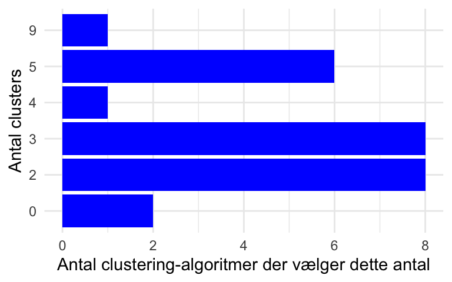
9.3.4 Visualisering af de forskellige antal clusters (augment)
Vi kan også visualisere, hvordan de forskellige antal clusters tager sig ud. Her kan vi bruge vores resultater fra augment-funktionen (kclusts_augment), som indeholder tilknytningerne af observationerne til clusters for hver af de ni clusterings. Bemærk, at kclusts_augment har 2997 observationer. Dette svarer til 9 (antal clusterings) x 333 (antal observationer i penguins), fordi vi har brugt unnest til at samle alle resultaterne.
## Rows: 2,997
## Columns: 13
## $ k <int> 1, 1, 1, 1, 1, 1, 1, 1, 1, 1, 1, 1, 1, 1, 1, 1, 1, 1…
## $ kclust <list> [1, 1, 1, 1, 1, 1, 1, 1, 1, 1, 1, 1, 1, 1, 1, 1, 1,…
## $ tidied <list> [<tbl_df[1 x 7]>], [<tbl_df[1 x 7]>], [<tbl_df[1 x …
## $ glanced <list> [<tbl_df[1 x 4]>], [<tbl_df[1 x 4]>], [<tbl_df[1 x …
## $ species <fct> Adelie, Adelie, Adelie, Adelie, Adelie, Adelie, Adel…
## $ island <fct> Torgersen, Torgersen, Torgersen, Torgersen, Torgerse…
## $ bill_length_mm <dbl> 39.1, 39.5, 40.3, 36.7, 39.3, 38.9, 39.2, 41.1, 38.6…
## $ bill_depth_mm <dbl> 18.7, 17.4, 18.0, 19.3, 20.6, 17.8, 19.6, 17.6, 21.2…
## $ flipper_length_mm <int> 181, 186, 195, 193, 190, 181, 195, 182, 191, 198, 18…
## $ body_mass_g <int> 3750, 3800, 3250, 3450, 3650, 3625, 4675, 3200, 3800…
## $ sex <fct> male, female, female, female, male, female, male, fe…
## $ year <fct> 2007, 2007, 2007, 2007, 2007, 2007, 2007, 2007, 2007…
## $ .cluster <fct> 1, 1, 1, 1, 1, 1, 1, 1, 1, 1, 1, 1, 1, 1, 1, 1, 1, 1…I den følgende kode laver jeg et plot af flipper_length_mm mod bill_length_mm og anvender facet_wrap, så hver clustering får sit eget plot (så der er 333 observationer pr. plot).
kclusts_augment %>%
ggplot(aes(x = flipper_length_mm, y = bill_length_mm, colour=.cluster)) +
geom_point(aes(shape=factor(species)), alpha = 0.8) +
facet_wrap(~ k) +
theme_bw() 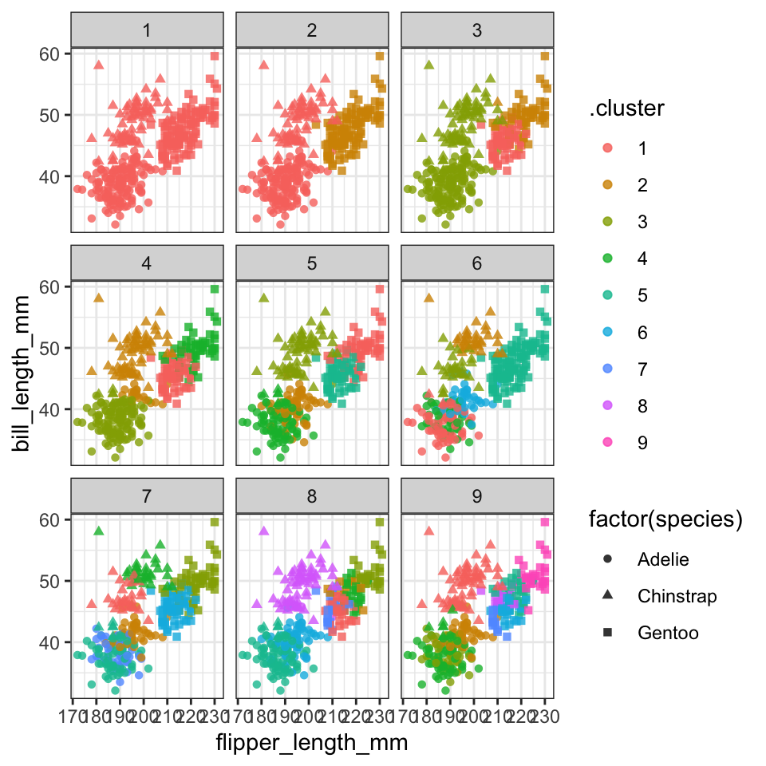
Vi kan nemt inddrage kclusts_tidy() og lave “X”-mærker ved blot at tilføje en ekstra geom_point og specificere kclusts_tidy. Først anvender jeg funktionen rename, så variablen cluster fra kclusts_tidy matcher .cluster fra kclusts_augment.
kclusts_tidy <- kclusts_tidy %>% rename(.cluster=cluster)
kclusts_augment %>%
ggplot(aes(x = scale(flipper_length_mm), y = scale(bill_length_mm),colour=.cluster)) + #scale here
geom_point(aes(shape=factor(species)), alpha = 0.8) +
facet_wrap(~ k) +
geom_point(data = kclusts_tidy,
aes(x=flipper_length_mm,y=bill_length_mm), #already based on scaled data, so don't scale
size = 10, shape = "x",col="black", show.legend = FALSE) +
theme_bw()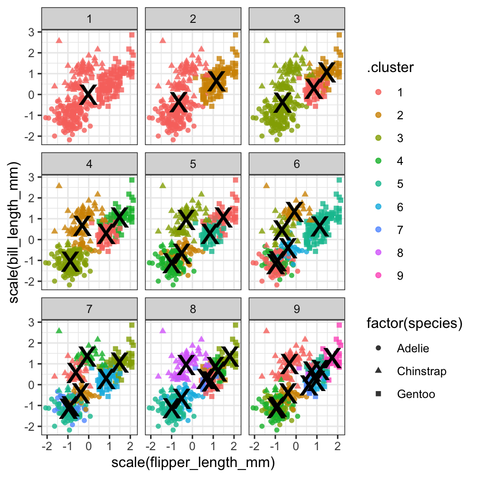
Vi kan forsøge at kigge endnu dybere ind i resultaterne - her introducerer jeg sex som en ekstra variabel i plottet. Husk, at variablen sex ikke blev brugt i vores k-means clustering, men det kan være, at der er nogle aspekter ved de fire variabler, som kan fortælle os noget om kønnet på pingvinerne. For at spare plads, har jeg kun vist antallet af clusters fra 2 til 5.
kclusts_augment %>% filter(k %in% 2:5) %>%
ggplot(aes(x = scale(flipper_length_mm), y = scale(bill_length_mm),colour=.cluster)) +
geom_point(aes(shape=factor(species)), alpha = 0.8) +
facet_grid(sex ~ k) +
geom_point(data = kclusts_tidy %>% filter(k %in% 2:5),
aes(x = flipper_length_mm,
y = bill_length_mm),
size = 10, shape = "x", colour = "black",show.legend = FALSE) +
theme_bw()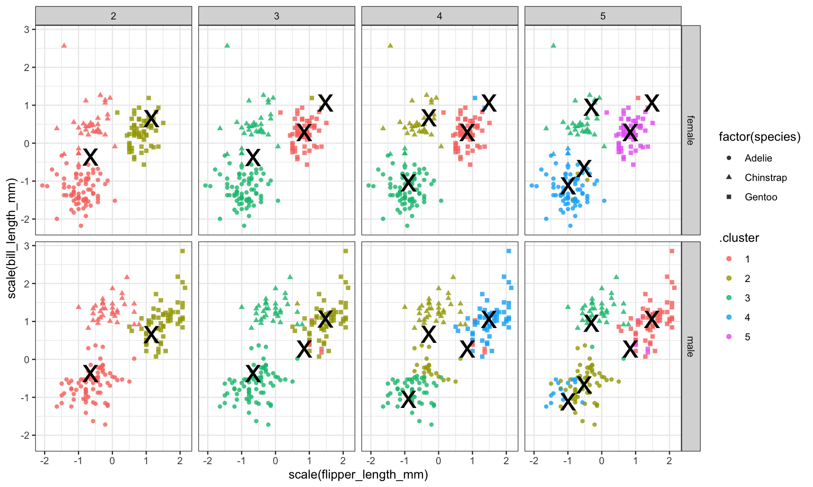
9.3.5 Nest/map-ramme fra sidste gang
Som en sidste bemærkning med k-means, kan man også lave en clustering for hver af de tre arter separat. I det følgende opretter jeg en nested dataframe, som indeholder tre datasæt (penguins opdelt efter variablen species), og jeg anvender den brugerdefinerede funktion scale_me til at udvælge de numeriske variabler og anvende scale() på hvert datasæt.
scale_me <- ~.x %>% select(where(is.numeric)) %>% scale
penguins_nest <- penguins %>%
group_by(species) %>%
nest() %>%
mutate("data_scaled" = map(data, scale_me))Dernæst laver jeg en brugerdefineret funktion til at lave en clustering på datasættet .x, og angiver at antallet af clusters skal være 3. Bemærk, at i den ovenstående sektion varierede vi antallet af clusters (indstilling centers), men her fastlægger vi antallet af clusters og varierer i stedet selve datasættet.
Jeg anvender cluster_me på mine skalerede datasæt, og anvender derefter glance, augment og tidy på clustering-resultaterne ligesom tidligere (bemærk brugen af map til at augment de opdelte datasæt).
penguins_nest <- penguins_nest %>%
mutate(clusters = map(data_scaled,cluster_me),
clusters_glance = map(clusters,glance),
clusters_augment = map2(clusters,data_scaled,~.x %>% augment(.y)), #I augment the scaled data so the correct scaling (based on individual datasets) appears in the next plot
clusters_tidy = map(clusters,tidy))
nested_clusters_augment <- penguins_nest %>% unnest(clusters_augment)
nested_clusters_tidy <- penguins_nest %>% unnest(clusters_tidy)Til sidste laver jeg en plot af resultaterne:
nested_clusters_augment %>%
ggplot(aes(x=bill_length_mm,y=flipper_length_mm,colour=.cluster)) + #data already scaled
geom_point() +
facet_grid(~species) +
geom_point(data=nested_clusters_tidy,
shape="X",colour="black",
size = 10) +
theme_bw()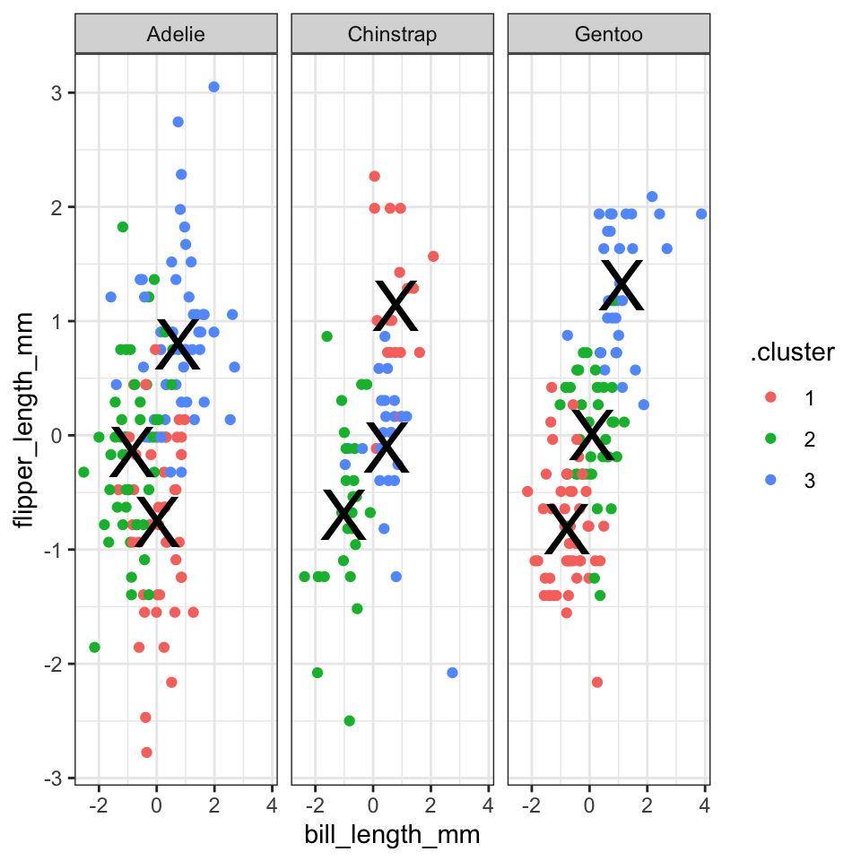
9.4 Metode 2: Hierarchical clustering
K-means er en meget populær metode til at lave clustering, men der findes mange andre metoder, fx hierarkisk clustering. Vi skifter over til mtcars, og ligesom med kmeans skal vi først anvende scale på de numeriske kolonner i dataene.
I modsætning til k-means skal man først beregne afstanden mellem alle observationerne i dataene for at lave hierarkisk clustering. Det gør man med funktionen dist() (som bruger den euklidiske afstand som standard):
For at lave en hierarkisk clustering anvender man funktionen hclust(). Metoden complete er standard, men man kan afprøve andre metoder (der er ikke en fast regel for, hvilken metode man skal bruge).
I det følgende arbejder vi lidt med mtcars_hc for at få nogle clusters frem, og for at lave et plot.
9.4.1 Vælge ønsket antal clusters
Funktionen cutree anvendes til at få clusters fra resultaterne af funktionen hclust. For eksempel, hvis man gerne vil have 4 clusters, bruger man k = 4. Jeg specificerer order_clusters_as_data = FALSE for at få clusters i den rækkefølge, som passer til det plot (dendrogram) vi laver (bemærk at man skal have pakken dendextend installeret for at få det til at fungere).
Her laver jeg et overblik over, hvor mange observationer fra mtcars der er i hver cluster:
FALSE # A tibble: 4 × 2
FALSE cluster `n()`
FALSE <int> <int>
FALSE 1 1 7
FALSE 2 2 8
FALSE 3 3 12
FALSE 4 4 5Ligesom k-means kan vi også visualiser klyngerne i et simpelt punkt plot:
mtcars %>%
mutate(cluster = factor(clusters),
car = rownames(mtcars)) %>%
ggplot(aes(x = hp, y = mpg, colour = cluster, label = car)) +
geom_point(size = 3, alpha = 0.8) +
geom_text(vjust = 1.5, size = 3) +
labs(title = "Hierarkisk clustering af mtcars (complete linkage, k = 4)",
x = "Hestekræfter (hp)",
y = "Miles per gallon (mpg)",
colour = "Klynge") +
theme_minimal()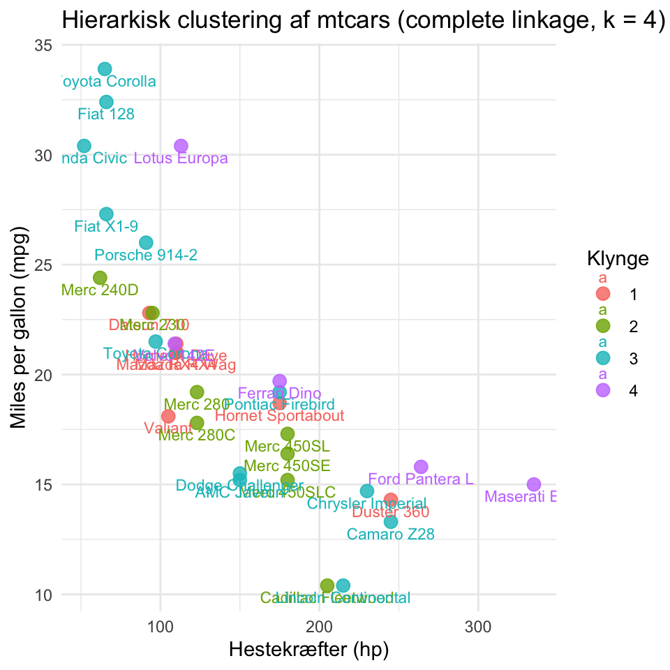
9.4.2 Lav et pænt plot af dendrogrammet med ggplot2
Først anvender jeg funktionen dendro_data() til at udtrække dendrogrammet fra hclust() resultaterne.
Vi tilføjer vores clusters, som vi beregnede ovenfor (det er derfor, vi sikrede rækkefølgen af clusters):
Vi benytter dend_data$segments og dend_data$labels til at lave et informativt plot af dataene med ggplot2.
ggplot(dend_data$segments) +
geom_segment(aes(x = x, y = y, xend = xend, yend = yend)) +
coord_flip() +
geom_text(data = dend_data$labels,
aes(x, y, label = label,col=factor(cluster)),
hjust=1,size=3) +
ylim(-3, 10) +
theme_dendro()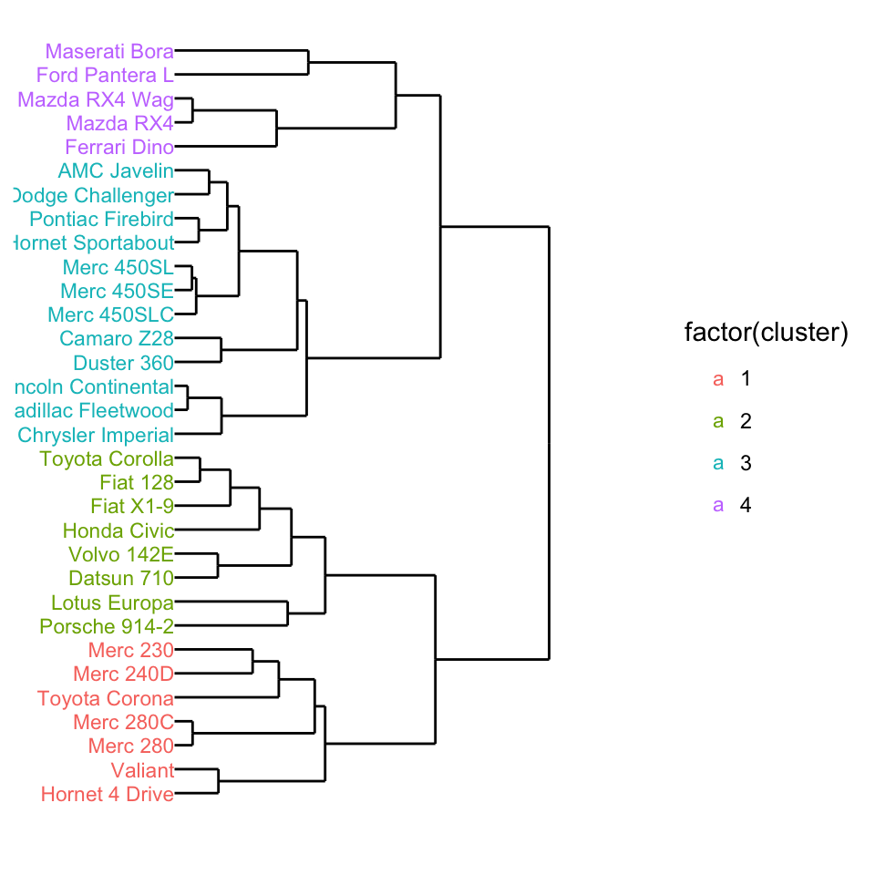
Så kan man se, der er fire clusters i dengrammet, og biler der er tætest på hinanden ligner hinanden mest - fk. Merc 280C og Merc 280 må være meget éns, og er som forventet lige ved siden af hinanden i plottet.
Man kan godt tilpasse ovenstående kode til et andet datasæt - se problemstillinger, men man må også gerne udvide plottet med de forskellige viden vi har om ggplot2.
9.4.3 Afprøve andre metoder på hierachical clustering
Ekstra hvis du vil afprøve de fire metoder i hclust - “average”, “single”, “complete” og “ward.D”.
# samme ggplot kommando som ovenpå lavet til en funktion
den_plot <- ~ggplot(.x$segments) +
geom_segment(aes(x = x, y = y, xend = xend, yend = yend)) +
coord_flip() +
geom_text(data = .x$labels,
aes(x, y, label = label),
hjust=1,size=2) +
ylim(-4, 10) + theme_dendro()Vi iterate over de fire metoder og lave samme process som ovenpå med map. Derefter kan man lave et plot fk. med grid.arrange:
# fire metoder:
m <- c( "average", "single", "complete", "ward.D")
hc_results <-
tibble(method = m) %>%
mutate( kclust = map(method, ~hclust(d, method = .x)),
dendrogram = map(kclust,as.dendrogram),
den_dat = map(dendrogram,~dendro_data(.x,type="rectangle")),
plot = map(den_dat,den_plot))
library(gridExtra)
grid.arrange(grobs = hc_results %>% pull(plot),ncol=2)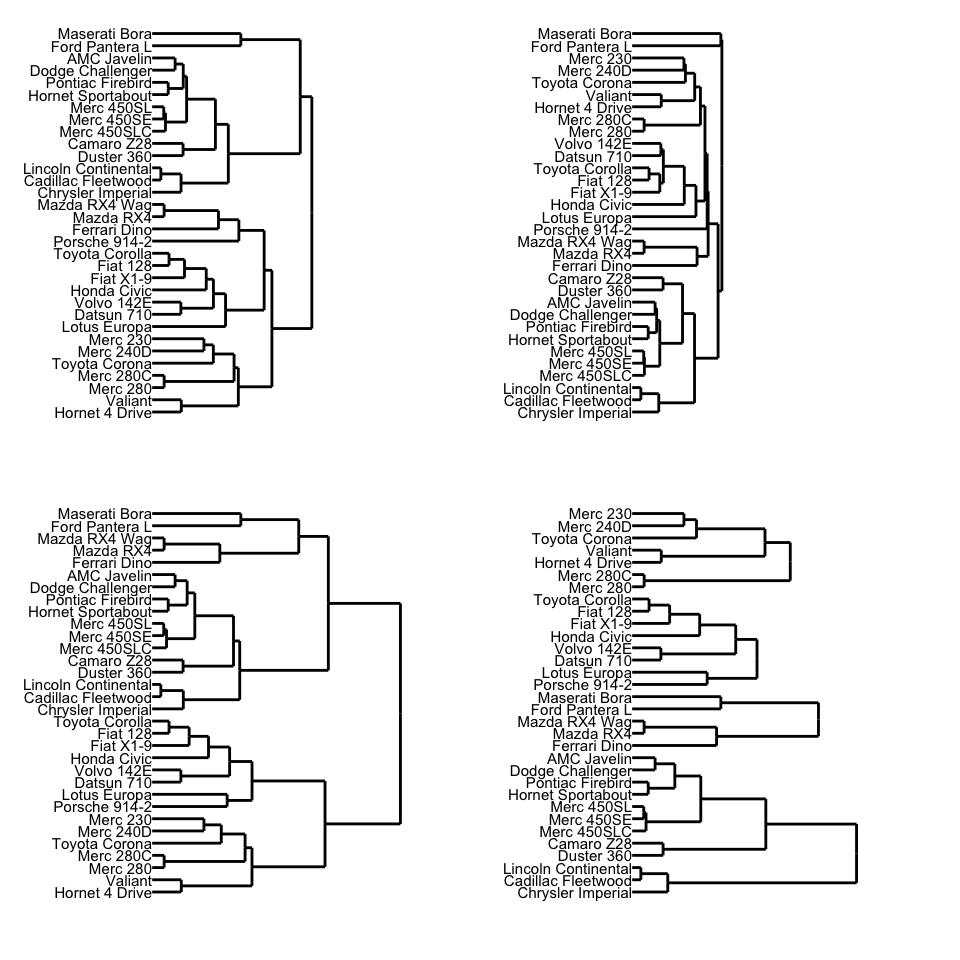
9.5 Problemstillinger
Problem 1) Quiz - Clustering
Problem 2) Funktionen kmeans. I ovenstående brugte vi mtcars i hierarchical clustering, men lad os se, hvordan det ser ud med k-means. Du er velkommen til at tilpasse min ovenstående kode, som jeg brugte til penguins datasættet:
a) Benyt kmeans til at finde 2 clusters i datasættet mtcars:
- Husk at vælge kun de numeriske kolonner og skalér datasættet på forhånd.
- Gem din clustering som
my_clusters. - Hvor mange observationer er der i hver af de to clusters?
b) Brug funktionen augment til at forbinde det oprindelige datasæt til dine clusters fra my_clusters (skriv mtcars indenfor funktionen augment).
c) Brug dit “augmenterede” datasæt til at lave et scatterplot mellem to af de numeriske variabler (du vælger selv hvilke) i datasættet, og farvelæg dem efter dine beregnede klynger. Da du har knyttet det oprindelige datasæt (som ikke var skaleret) i augment()-funktionen, skal du skalere dine variabler i plottet.
d) Tilføj tidy()-funktionen for at få fat i middelværdierne/centroids for hver af de 2 clusters, og tilpas min kode fra notaterne (sektion 9.2.5) for at tilføje dem til plottet som ‘x’ (husk at din “centers”/centroids er allerede baserede på scaled data så du behøver ikke at anvende scale på deres værdier).
Problem 3) Hierarchical clustering øvelse
Vi laver en analyse af det msleep datasæt. Jeg har lavet oprydningen og scaling for dig:
data(msleep)
msleep_clean <- msleep %>% select(name,where(is.numeric)) %>% drop_na()
msleep_scaled <- msleep_clean %>% select(-name) %>% scale
row.names(msleep_scaled) <- msleep_clean$nameTilpas min kode fra kursusnotaterne (sektion 9.4) til at lave følgende:
a) Benyt funktioner dist() og dernæst hclust() på datasættet msleep_scaled.
b) Benyt cutree for at finde 5 clusters fra dine hclust-resultater, og kalde det for clusters. Husk at anvende order_clusters_as_data = FALSE så at vi har den korrekt rækkefølge for et plot (OBS man skal installere/indlæse pakken dendextend)
c) Benyt dendro_data til at udtrække de dendrogram fra resultaterne og tilføj clusters til dend_data$labels (kopier kode fra 9.4.2).
d) Lav et dengrogram plot: igen tilpas koden (9.4.2) for mtcars eksempel for nuværende data
Problem 4)
Inlæs data
wholesale <- read.csv("https://www.dropbox.com/s/7nb5pkruqt4fqn4/Wholesale%20customers%20data.csv?dl=1", header = TRUE)a) Foretag ændringer i datasættet i henhold til følgende instruktioner (og husk at gemme):
- Channel - anvend
recodefor at ændre til navne- 1 = horeca
- 2 = retail
- Region - anvend
recodefor at ændre til navne- 1 = Lisnon
- 2 = Oporto
- 3 = Other
- Anvend
map_iftil at transformere samtlige numeriske variabler medlog(sektion 7.5.2)
b) Udvælg de numeriske variabler fra dit datasæt og anvende scale() - kalde dit nye datasæt for wholescale_scale
c) Tilpas min kode fra sektion 9.3.1 til at lave 10 clusterings (k=1:10) på wholesale_scale og gem dem i en dataframe, sammen med din clusterings resultater i “tidy”, “glance” og “augment” form.
d) Lav et elbow plot fra dit output fra glance (sektion 9.3.2)
e) Udvælg clusterings hvor k er fra 2 til 7 fra dit output fra augment og lav scatter plots af variabler Frozen VS Fresh, hvor du:
- Giv farve efter .cluster
- Adskil plots efter
k - Prøv dernæst at adskille dit plots yderligere efter
Channel.
f) Tilpas koden fra 9.3.5 til at lave en analyse for “hoerca” og “retail” (variablen Channel) hver for sig. Angiv 4 clusters i din analyse.
g) Lav et plot af din clustering (adskilt efter variablen Channel) og få “x” på plotterne til at vise din cluster middelværdier for Frozen og Fresh.
Problem 5) Sammenligning af k-means og hierarchical clustering
Tag udgangspunkt i eukaryotes ved at indlæse følgende kode:
## Rows: 11508 Columns: 19
## ── Column specification ──────
## Delimiter: "\t"
## chr (10): organism_name, bioproject_accession, group, subgroup, assembly_ac...
## dbl (7): taxid, bioproject_id, size_mb, gc, scaffolds, genes, proteins
## date (2): release_date, modify_date
##
## ℹ Use `spec()` to retrieve the full column specification for this data.
## ℹ Specify the column types or set `show_col_types = FALSE` to quiet this message.euk <- eukaryotes %>%
select(where(is.numeric)) %>%
select(-taxid, -bioproject_id) %>%
drop_na() %>%
map_if(is.numeric,log) %>% #log skala
as_tibble()a) Lav både k-means og hierarchical clustering for at få en clustering med 4 clusters hver (tilføj dine clustersings som to kolonner til din dataframe, kaldet henholdvis .cluster_km og .cluster_hc).
b) Lav følgende plot (dine clusters kan variere pga. tilfældighed)
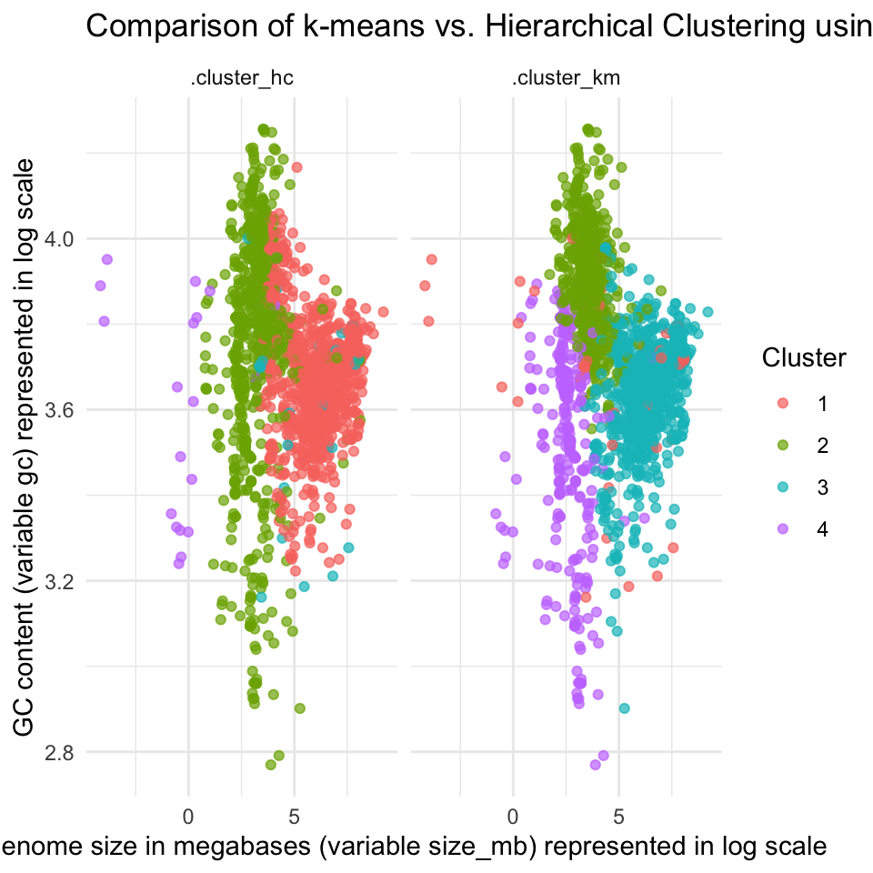
c) Valgfri udfordring: Brug map-funktionerne med et argument k, så du kan variere antallet af klynger. Beregn kmeans og hierachical klusteringerne for k = 2 : 5, og lav derefter et facet grid plot, der sammenligner resultaterne for både k-means og hierarkisk clustering for hvert valgt k.